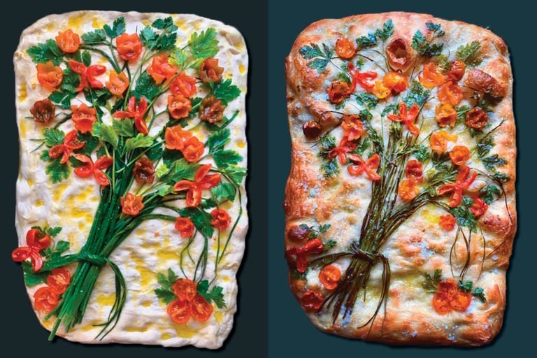

Beautiful Botanical Foccacia

Cherry tomato flowers, Italian parsley petals, bell pepper butterflies, chive bouquet stems,
green bean grass. No, this isn’t some kind of weird Willy Wonka botanical wonderland.
These are just a few of the eye-appealing elements Instagrammer Diane Morrisey
uses to fashion lovely landscapes on focaccia!
Ingredients
- 1 cup plus 1 Tbsp. 00 flour
- 1 cup plus 1 Tbsp. and 2 tsp. all-purpose flour
- 1 tsp. fine sea salt
- 3/4 tsp. active dry yeast
- 1 tsp. extra-virgin olive oil
- Toppings of your choice
Directions
- In a mixing bowl, combine flours and salt. In a small mixing bowl,
stir together a little less than 1 cup lukewarm tap water, yeast and olive oil;
pour it into flour mixture. Knead with your hands until combined,
approximately 3 minutes, then let the mixture rest for 15 minutes.
Knead rested dough for 3 minutes. Cut into 2 equal pieces and shape each into a ball.
Place on floured surface, cover with dampened cloth, and let rest and rise for
3 to 4 hours at room temperature.
- Coat a pan with olive oil and spread dough evenly.
Dock (or poke) the dough well with your fingertips. Decorate however you want, making sure
that you press the ingredients into the dough to slightly adhere them. Drizzle with
olive oil and season with salt and pepper.
-
Bake at 400°F for 30 minutes or until golden brown. Let it cool on a wire rack; then ooh, aah and devour.